From data analysis to publication: Reproducible research with R and Quarto
RLadies - BA
Hello/ Hola!/ Ciao!

Betsy Cohen

Jesica Formoso
Agenda
Why Reproducibility?
What is Quarto?
Core Use Cases: a short walk around
Academic Production with Quarto Journal and Manuscripts
Journal Templates
Quarto Manuscript Projects
Citations, Cross references, and authoring
Learning More
On the shoulders of giants
This presentation is based on:
Slides and materials for the”Reproducible Manuscripts with Quarto” talk at posit::conf(2023). by Mine Çetinkaya-Rundel
Quarto for Academics video on YouTube by Mine Çetinkaya-Rundel and Posit
R/Medicine: Quarto for Reproducible Medical Manuscripts by Mine Cetinkaya-Rundel webinar in youtube video
The Turing Way Community, & Scriberia.(2024) on https://book.the-turing-way.org/
Why Reproducibility?
What do we mean by reproducibility
What is Quarto?
Quarto General Workflow
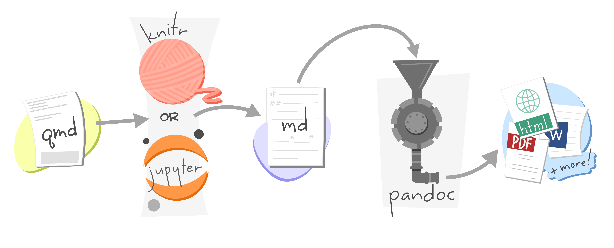
“Artwork from”Hello, Quarto” keynote by Julia Lowndes and Mine Çetinkaya-Rundel, presented at RStudio Conference 2022. Illustrated by Allison Horst.”
Quarto for R and other languages

Use Cases
🗃️Dynamic Documents
🌄Beautiful Publications
🧪Scientific Markdown
🕸️Websites and Books
📽️Interactivity
Take a visit to Quarto Gallery here
A short walk around
Install Quarto

Create a Quarto File in a project we already have in our computer
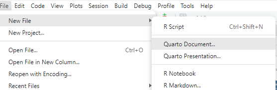
Create a New Quarto Project
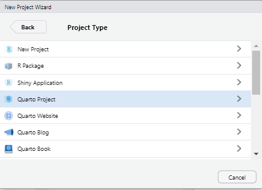
General folder structure in a Quarto Project
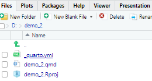
Quarto file general structure
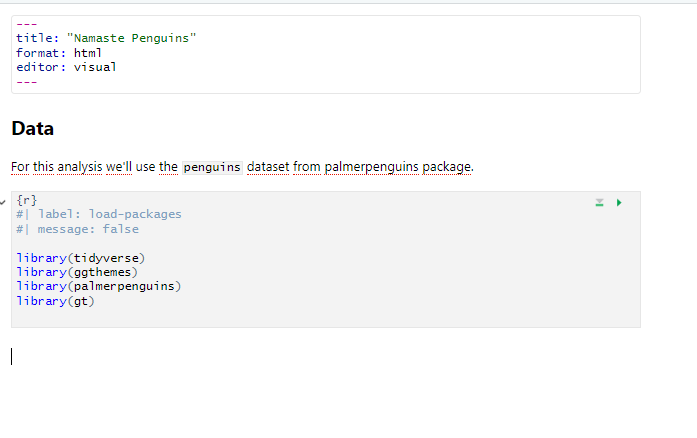
Visual mode vs Source mode

Visual mode shortcuts


Insert Code Chuncks

Code cuncks options
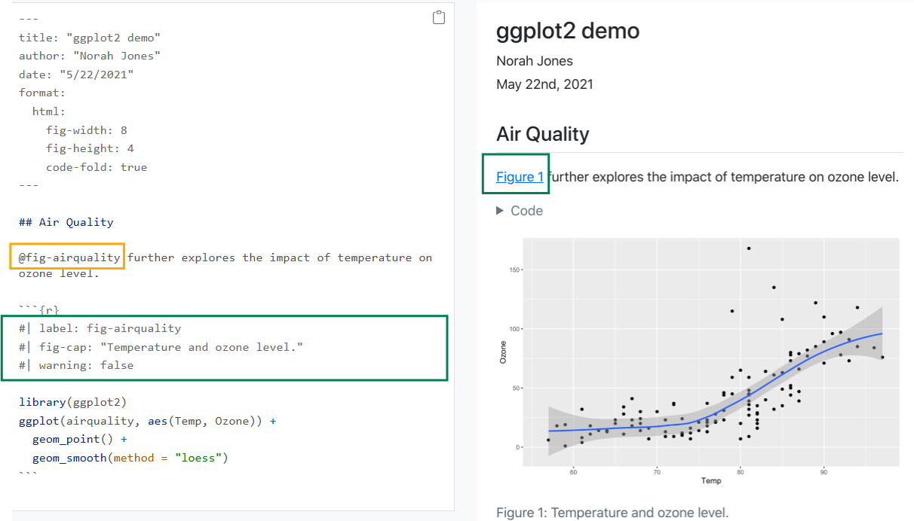
Code Chuncks Options
You can add Quarto options to code cells by adding a #| comment to the top, followed by the option in YAML syntax. For example, adding the echo option with the value true would look like this:
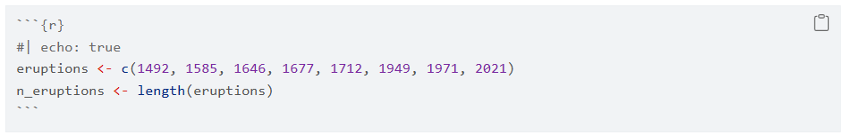
The echo option describes whether the code is included in the rendered article. If you make this change and save index.qmd, you’ll see this code now appears in the article.
Code chunk options guide
You can find a list of all the code cell options available on the Knitr Code Cell reference page at https://quarto.org/docs/reference/cells/cells-knitr.html
Code chunks options from YAML
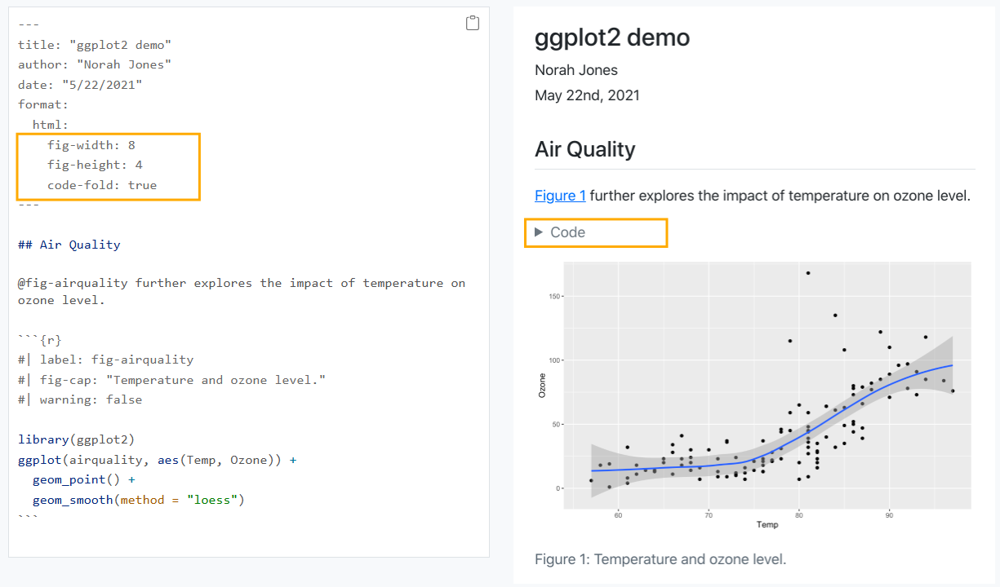
Quarto for manuscripts and journal articles
Quarto can …
be authored in your favorite code editor
apply journal styles to your outputs with Quarto extensions
orchestrate multiple inputs and outputs with embedded computing using a new
Quarto project type: manuscriptproduce manuscripts in multiple formats (including LaTeX or MS Word formats required by journals), and give readers easy access to all of the formats through a website
publish computations from one or more notebooks alongside the manuscript, allowing readers to dive into your code and view it or interact with it in a virtual environment
publish to GitHub Pages, Netlify, and more
Journals vs Manuscripts
In Quarto, a journal refers to a single document, potentially with embedded computations and visualizations, designed for publication in a journal format.
A manuscript, on the other hand, represents a collection of Quarto documents, potentially including multiple chapters, that are intended to be assembled into a book-like structure.
Journals
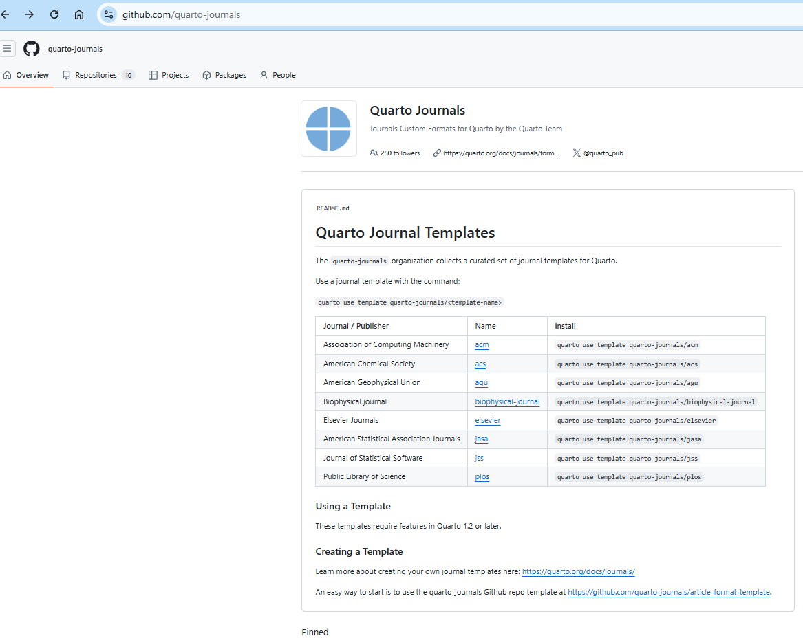
Installing the templates from your terminal

How does the journal template file looks like
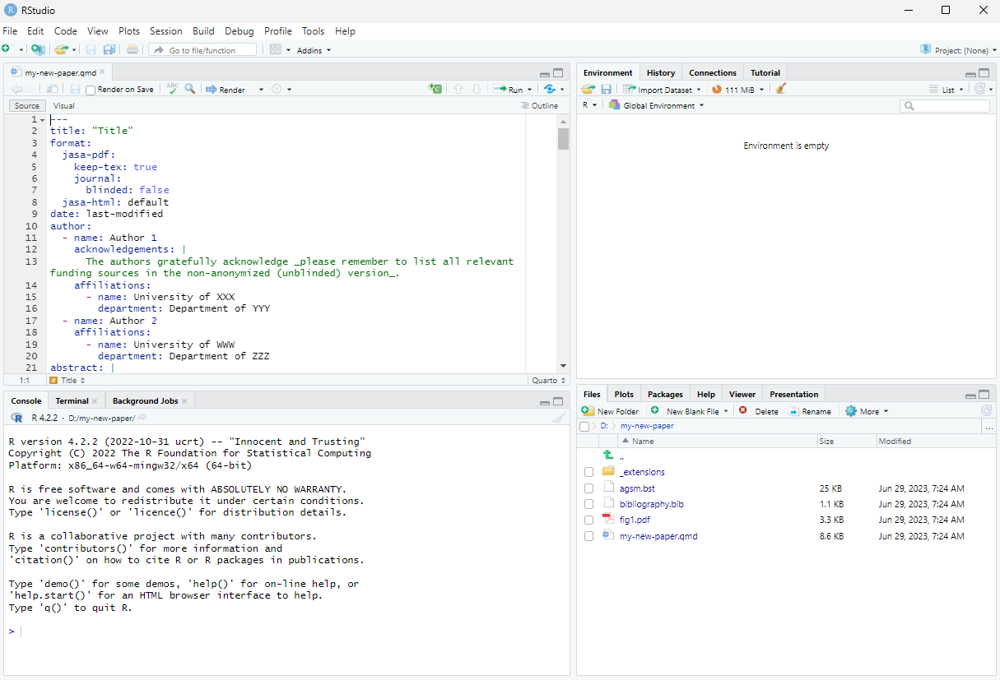
Rendering a Journal paper

Getting started with a manuscript: create a manuscript project
Start from scratch
- in your terminal write
quarto create project manuscript <name> - then start adding manuscipt content or…
- in your terminal write
Start with a sample from https://quarto.org/docs/manuscripts
Tip
Learn how to Track your project with Git and host on GitHub for happy publishing.
Let’s get started
If you wanna follow along the same structure we are going to use, you can copy this GitHub repo.
https://github.com/quarto-ext/manuscript-template-rstudio/tree/main
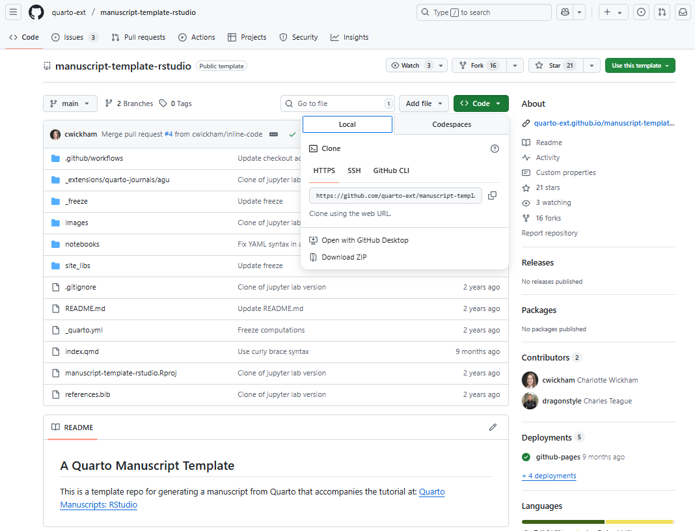
{fig-align = “center”}Quarto manuscript: minimal folder structure
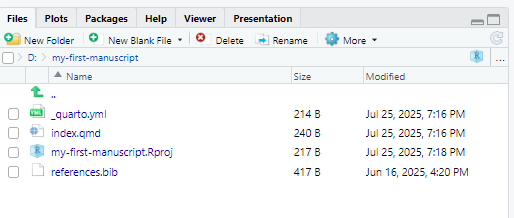
Quarto manuscript: minimal manuscript _quarto.yml
Basic workflow
The basic workflow for writing a manuscript in Quarto is to make changes to your article content (the index.qmd if you are following the example), preview the changes with Quarto, and repeat.

How does it look like once render?
You can follow along in your first manuscript quarto qmd render
- Open index.qmd.
- Render and preview the manuscript by hitting the Render button located in the menu bar of the editor
- You’ll see some output from Quarto in the Background Jobs pane and then a live preview will appear in the Viewer pane.
- Change the title of your index.qmd
- Save the file, re-render, and you’ll see the preview update.
One qmd to rule all formats
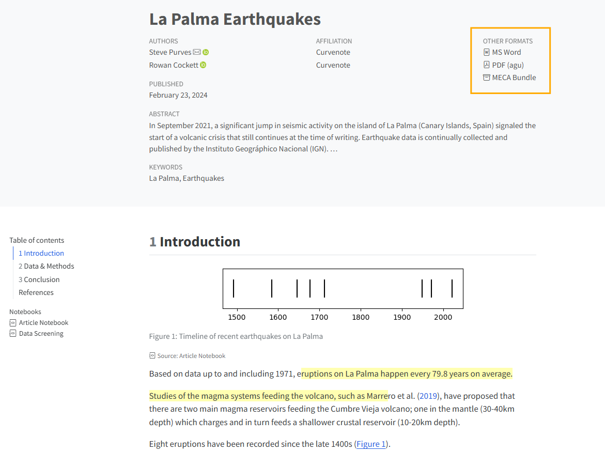
{fig-align = “center”}One qmd to rule all formats
Setting the Front matter of your index.qmd
_index.qmd
title: La Palma Earthquakes
author:
- name: Steve Purves
orcid: 0000-0002-0760-5497
corresponding: true
email: steve@curvenote.com
roles:
- Investigation
- Project administration
- Software
- Visualization
affiliations:
- Curvenote
- name: Rowan Cockett
orcid: 0000-0002-7859-8394
corresponding: false
roles: []
affiliations:
- Curvenote
keywords:
- La Palma
- Earthquakes
abstract: |
In September 2021, a significant jump in seismic activity on the island of La Palma (Canary Islands, Spain) signaled the start of a volcanic crisis that still continues at the time of writing. Earthquake data is continually collected and published by the Instituto Geográphico Nacional (IGN). ...
plain-language-summary: |
Earthquake data for the island of La Palma from the September 2021 eruption is found ...
key-points:
- A web scraping script was developed to pull data from the Instituto Geogràphico Nacional into a machine-readable form for analysis
- Earthquake events on La Palma are consistent with the presence of both mantle and crustal reservoirs.
date: last-modified
bibliography: references.bib
citation:
container-title: Earth and Space Science
number-sections: true
---Using computations in the body of youtr text
You can use computed values directly in your article text using the syntax `{r} expr`. For example, consider this line in index.qmd:
When rendered, it displays as:
Based on data up to and including 1971, eruptions on La Palma happen every 79.8 years on average.
Code chuncks for computations using the lable and fig- options
```{r}
#| label: fig-timeline
#| fig-cap: Timeline of recent earthquakes on La Palma
#| fig-alt: An event plot of the years of the last 8 eruptions on La Palma.
#| fig-height: 1.5
#| fig-width: 6
par(mar = c(3, 1, 1, 1) + 0.1)
plot(
eruptions, rep(0, n_eruptions),
pch = "|", axes = FALSE
)
axis(1)
box()
```Citations
references.bib
@article{marrero2019,
author = {Marrero, Jos{\' e} and Garc{\' i}a, Alicia and Berrocoso, Manuel and Llinares, {\' A}ngeles and Rodr{\' i}guez-Losada, Antonio and Ortiz, R.},
journal = {Journal of Applied Volcanology},
year = {2019},
month = {7},
pages = {},
title = {Strategies for the development of volcanic hazard maps in monogenetic volcanic fields: the example of {La} {Palma} ({Canary} {Islands})},
volume = {8},
doi = {10.1186/s13617-019-0085-5},
}Citations
When rendered, it displays as:
Studies of the magma systems feeding the volcano, such as Marrero et al. (2019), have proposed
Citations
… and when hovering over the citation text it reveals the full reference details allowing reader to click on the citation and take it to the reference in the References section at the end of the article:

Citations
Another common style is to place the citation within parentheses at the end of a sentence. You can achieve this by enclosing the citation syntax in square brackets [. For example,
When rendered, it displays as:
A prior study of the magma systems feeding the volcano proposed that there are two main magma reservoirs feeding the Cumbre Vieja volcano (Marrero et al. 2019).
Let’s dive into the code by:
- Adding a citation
- Cross-referencing figures and tables.
Cross References element and prefix
Figure
fig-and will render as Figure 1Table
tbl-and will render as Table 1Equation
eq-and will render as Equation 1Section
sec-and will render as Section 1
Warning
To cross reference sections your document YAML header must also include number-sections: true You can add a label to a section heading in curly braces after the heading, e.g ## Data & Methods {#sec-data-methods} and the you can then reference this section in the text by adding the text and the @ reference like Data and methods are discussed in @sec-data-methods.
Cross Reference in visual mode

Static Figures, and Images
To include a figure from a file, the markdown syntax looks like:
By using #fig-name-of-image inside curly braces following the image path you can provide the reader a label for cross references. For eg.
Tip
It is recomended to store your in an folder named images/. Your images can be anywhere inside your manuscript project directory, just make sure you include the full path to the image, relative to the location of index.qmd.
Publishing
To publish your site on GitHub Pages simply tipe
Choose GitHub Pages or the platform you prefer.
You can learn more about publishing at https://quarto.org/docs/publishing/